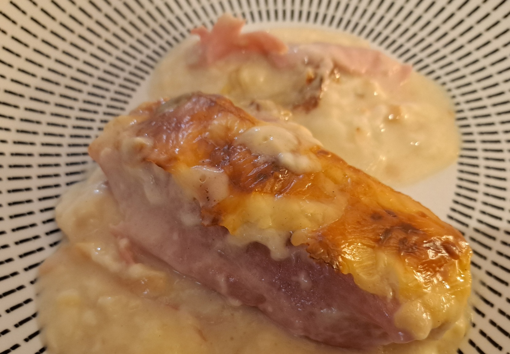

Endives au Jambon with Raclette

Instructions
1
Cook the Endives
Boil the endives in a large pot of water for about 20 minutes. Drain thoroughly to remove excess moisture.
2
Roll the Endives
Place one cooked endive on each slice of ham and roll tightly.
3
Arrange in the Baking Dish
Place the ham-wrapped endives in a baking dish.
4
Prepare the Sauce
Melt the butter in a saucepan. Add the flour and stir to form a roux. Gradually add the milk while whisking until smooth. Stir in the cream and season with salt and pepper.
5
Cover and Top with Raclette
Pour the sauce over the endives and top with slices of raclette cheese.
6
Bake
Bake in the oven at 200 °C (390 °F) for 30–35 minutes, until the raclette is melted and golden.